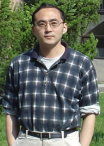

Important Dates
Special Session Proposals:
January 8, 2016
Paper submission:
January 8, 21 January 28, 2016
Acceptance Notification:
March 15 March 20, 2016
Final Submission:
April 10 April 17, 2016
Date of Workshop:
May 30 - June 1, 2016
Sponsors


News
March 29, 2016
The registration is now open.
January 20, 2016
Due to many requests, the initial submission deadline is January 8, 21 extended to January 28, 2016.
December 22, 2015
Due to the requests of authors, the deadline of the initial submission is now extended to January 21, 2016.
December 12, 2015
Plentary Speakers are now available.
December 5, 2015
Special Sessions are now available.
November 7, 2015
The submission site is now open.
April 1, 2015
The website is available.
The workshop will be held in Wyndham Grand Xian South Hotel
Plenary Speakers
Prof. Dr.-Ing. Jan Lunze |
|
| Fault-tolerant control of discrete-event systems described by I/O automata | |
Abstract: The talk gives a survey of the basic ideas and recent result on fault diagnosis and reconfigurable control of discrete-event systems that are modelled as input-output automata. Faults and failures in the system change the state transition function of the plant and lead to a set of models, where each of the models represent the plant in one of the fault modes. They can be detected and isolated by deciding which element of the model set is consistent with the measured input and output sequences. Fault tolerance of the controller is obtained by a trajectory re-planning and an adaptation of the control algorithm. The methods are illustrated by several examples.
Biography: Jan Lunze is Professor of Automatic Control and head of the Institute of Automation and Computer Control at the Ruhr-University Bochum, Germany, where he teaches system and control theory. Since 2008, he is an ordinary member of the North Rhine-Westphalian Academy of Sciences, Humanities and the Arts. Professor Lunze's research interests are in discrete-event systems, hybrid dynamical systems, networked control systems, and faulttolerant control with applications in the process industry and the automotive industry. He is author and co-author of numerous research papers and has written several books including Diagnosis and Fault-Tolerant Control (Springer 2015, 3rd ed.), Control Theory of Digitally Networked Dynamic Systems (Springer 2014) and several textbooks including Ereignisdiskrete Systeme (Oldenbourg 2012, 2nd ed., in German) giving an introduction to discrete-event systems. |
|
|  | Prof. Yiguang Hong |
| Opinion Dynamics in Social Networks: Agreement or Disagreement | |
Abstract: In this talk, we first give a brief survey of recent achievement of opinion dynamics in social networks. Then we focus on bounded-confidence opinion models, including the Hegselmann-Krause model and Deffuant-Weisbuch model. For such models, we demonstrate their disagreement phenomena: fragmentation and fluctuation, with strict mathematical analysis; we discuss the opinion intervention in order to alter opinion evolution in social networks, and theoretically prove that a simple noise injection strategy is effective to enhance the opinion agreement.
Biography: Yiguang Hong received his B.S. and M.S. degrees from Peking University, China, and the Ph.D. degree from the Chinese Academy of Sciences (CAS), China. He is currently a Professor in the Institute of Systems Science, Academy of Mathematics and Systems Science, CAS, and serves as the Director of Key Lab of Systems and Control, CAS and the Director of the Information Technology Division, National Center for Mathematics and Interdisciplinary Sciences, CAS. His current research interests include nonlinear dynamics and control, multi-agent systems, autonomous systems, and distributed optimization. Prof. Hong has published about 100 journal papers. He is a recipient of the Guang Zhaozhi Award at the Chinese Control Conference in 1997, Young Author Prize of the IFAC World Congress in 1999, Young Scientist Award of CAS in 2001, and the Youth Award for Science and Technology of China in 2006, and the National Natural Science Prize of China in 2008. Prof. Hong serves as Editor-in-Chief of the Control Theory and Technology and Deputy Editor-in-Chief of Acta Automatica Sinca. He also serves or served as Associate Editors for many journals including the IEEE Transactions on Automatic Control, IEEE Transactions on Control of Network Systems, IEEE Control Systems Magazine, Nonlinear Analysis: Hybrid Systems, Journal of Systems Science and Complexity, and Kybernetika. He was the IEEE Control Systems Society (CSS) membership and publilic information committee chair and the IEEE CSS chapter activities committee chair. |
|
Prof. Edwin K. P. Chong |
|
| Submodular Optimization Problems and Their Applications | |
Abstract: We discuss optimization problems where the objective function is submodular, which roughly means that it has the property of diminishing returns. In such problems, we can provably bound the performance of the greedy solution relative to the optimal solution. We present a variety of recent results related to such optimization problems, including bounds for "string-submodular" problems, bounds related to k-batch greedy strategies, improved bounds involving notions of curvature, and bounds on Nash equilibria in submodular games. We illustrate these results in the context of various application problems arising in task scheduling and adaptive sensing.
Biography: Edwin K. P. Chong received the B.E. degree with First Class Honors from the University of Adelaide, South Australia, in 1987; and the M.A. and Ph.D. degrees in 1989 and 1991, respectively, both from Princeton University, where he held an IBM Fellowship. He joined the School of Electrical and Computer Engineering at Purdue University in 1991, where he was named a University Faculty Scholar in 1999. Since August 2001, he has been a Professor of Electrical and Computer Engineering and Professor of Mathematics at Colorado State University. He coauthored the best-selling book, An Introduction to Optimization (4th Edition, Wiley-Interscience, 2013). He received the NSF CAREER Award in 1995 and the ASEE Frederick Emmons Terman Award in 1998. He was a co-recipient of the 2004 Best Paper Award for a paper in the journal Computer Networks. He is a Fellow of IEEE. In 2010, he received the IEEE Control Systems Society Distinguished Member Award. Prof. Chong was the founding chairman of the IEEE Control Systems Society Technical Committee on Discrete Event Systems, and served as an IEEE Control Systems Society Distinguished Lecturer. He is currently a Senior Editor of the IEEE Transactions on Automatic Control, and has also served on the editorial boards of Computer Networks, Journal of Control Science and Engineering, and IEEE Expert Now. He has served as a member of the IEEE Control Systems Society Board of Governors and as Vice President for Financial Activities until 2014. He currently serves as President-Elect. He was the General Chair for the 2011 Joint 50th IEEE Conference on Decision and Control and European Control Conference. |
|